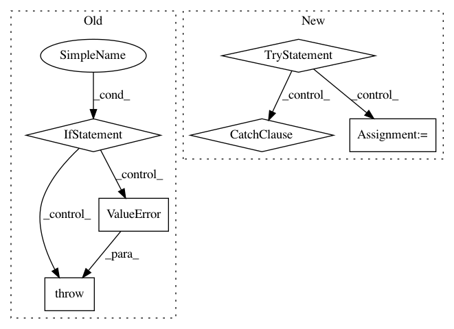

baf110d82f60c51a5680e728cd3c5c6d3536117d,gpflow/params.py,ParamList,__init__,#ParamList#Any#Any#,494
Before Change
if not isinstance(list_of_params, list):
raise ValueError("Not acceptable argument type for list_of_params.")
for i, item in enumerate(list_of_params):
if not isinstance(item, (Param, Parameterized)):
raise ValueError("Not acceptable item type: {0}.".format(type(item)))
item.set_parent(self)
item.set_name("{index}/{name}".format(index=i, name=item.name))
self._list = list_of_params
After Change
raise ValueError("Not acceptable argument type at list_of_params.")
for i, item in enumerate(list_of_params):
if not _is_param_like(item):
try:
item = Param(_valid_input(item))
except ValueError:
raise ValueError("A list item must be either parameter, "
"tensorflow variable, an array or a scalar.")
item.set_parent(self)
item.set_name("{index}/{name}".format(index=i, name=item.name))
self._list = list_of_params
In pattern: SUPERPATTERN
Frequency: 3
Non-data size: 6
Instances
Project Name: GPflow/GPflow
Commit Name: baf110d82f60c51a5680e728cd3c5c6d3536117d
Time: 2017-09-24
Author: art.art.v@gmail.com
File Name: gpflow/params.py
Class Name: ParamList
Method Name: __init__
Project Name: tryolabs/luminoth
Commit Name: fbcbb710c465da13ed6705fb8d904fe2795b246a
Time: 2018-02-08
Author: agustin@tryolabs.com
File Name: luminoth/models/base/truncated_base_network.py
Class Name: TruncatedBaseNetwork
Method Name: get_trainable_vars
Project Name: chainer/chainercv
Commit Name: 5e01619e1f495db4ce7201c1444a66fbf46059c4
Time: 2019-02-23
Author: ktns.87@gmail.com
File Name: chainercv/links/model/pickable_sequential_chain.py
Class Name: PickableSequentialChain
Method Name: pick